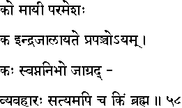
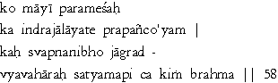

|

|
Verse 58 - Meaning:
Q:Who (ko) is the Lord of Maayaa (maayii) ?
A:The Supreme Being.(parameshah)
Q:What (kim) is true magic (indra-jaalaa-yate) ?
A:This ever-changing Universe.(prapanco-ayam).
Q:What (kah) resembles a dream experience (svapna-nibho) ?
A:The activities (vyavahaarah) of the waking (jaagrad) life.
Q:What is(kim - api ca) the True Being (satyam) ?
A:It is Brahman (the Supreme Being which is not destroyed even in absolute annihilation).
|